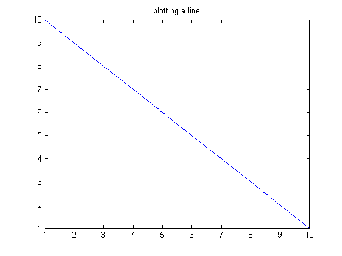
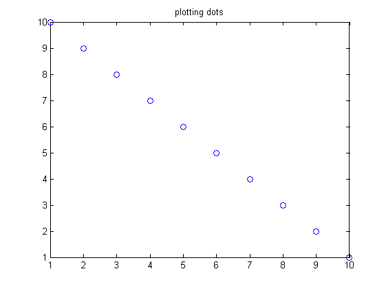
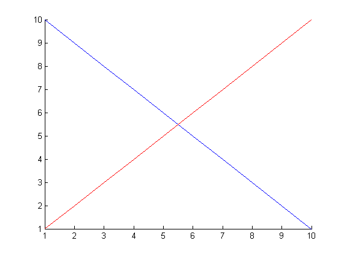
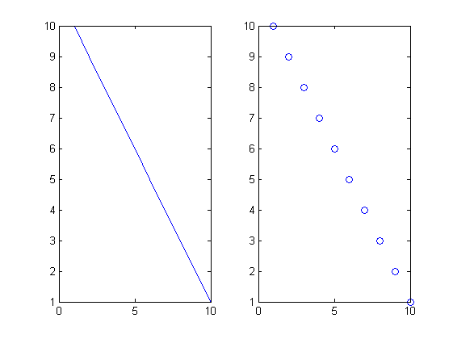
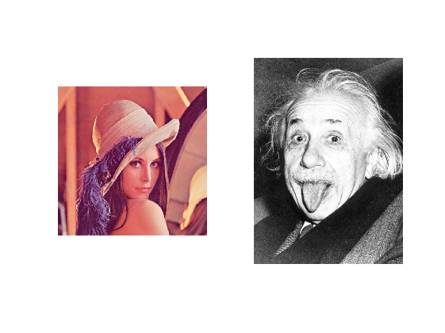
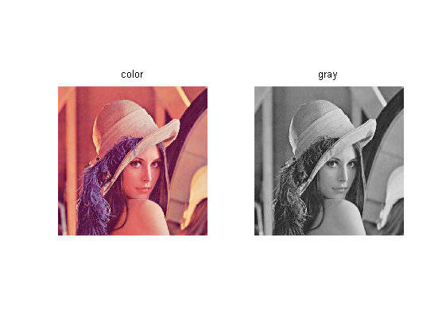
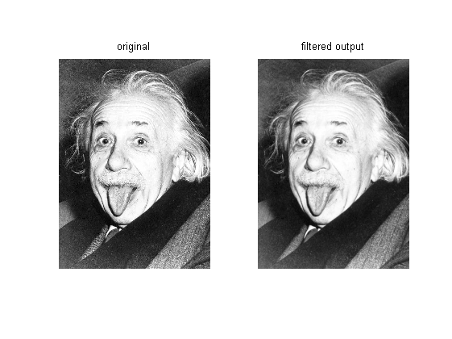
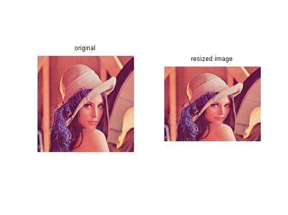

MATLAB tutorial
Contents
.m files
Matlab code is stored in .m files. There are two types of .m files: scripts and functions.
Function files start with a function declaration function [out1, out2,...] = funname(in1, in2, ...) Parameters are always passed by value. Variables defined in functions are local.
Script files contain simply a list of Matlab commands. Variables in scripts are global. Scripts are useful for rapid prototyping, especially when using cells like in this file.
Defining vectors and matrices
A vector is defined by placing a sequence of numbers within square braces
r = [1 7 5 9 -2] % creates a row vector c = [1; 7; 5; 9; -2] % creates a column vector
r =
1 7 5 9 -2
c =
1
7
5
9
-2
Matlab can define a set of numbers with a common increment using colons
x = 1:4 y = 10:-1:1 z = 0.1:0.1:0.3
x =
1 2 3 4
y =
10 9 8 7 6 5 4 3 2 1
z =
0.1000 0.2000 0.3000
A matrix can be treated like a column of row vectors
A = [1 3 4; 2 5 6]
A = A' % An apostrophe transposes a matrix
A =
1 3 4
2 5 6
A =
1 2
3 5
4 6
Matlab built-in functions generate some basic matrices
A = zeros(2,5) %creates an m-by-n matrix of zeros B = ones(1,3) %creates an m-by-n matrix of ones C = eye(2) %creates an m-by-n identity matrix
A =
0 0 0 0 0
0 0 0 0 0
B =
1 1 1
C =
1 0
0 1
You can convert a vector into a matrix using reshape and repmat
v = 1:4 A = reshape(v,2,2) % changes size taking elements columnwise B = repmat(v,2,1) % replicates and tiles an array C = repmat(B,1,2) % replicates and tiles a matrix
v =
1 2 3 4
A =
1 3
2 4
B =
1 2 3 4
1 2 3 4
C =
1 2 3 4 1 2 3 4
1 2 3 4 1 2 3 4
Accessing elements
You can view individual entries using the same notation you used to create the vector
v = [2:3:17]
v(1)
v([1,3,4])
v(1:2:end) % "end" can serve as the last index
v =
2 5 8 11 14 17
ans =
2
ans =
2 8 11
ans =
2 8 14
A = [1 3 4; 2 5 6] A(2,3) A(1:2,2:3)
A =
1 3 4
2 5 6
ans =
6
ans =
3 4
5 6
A = [1 3 4; 2 5 6]
A(:) % returns all the elements
A =
1 3 4
2 5 6
ans =
1
2
3
5
4
6
Basic operations
The basic notation is same as the standard linear algebra notation
A = [1 2;3 4]
A*A
A.*A % '.' for element-wise operations
A =
1 2
3 4
ans =
7 10
15 22
ans =
1 4
9 16
Matlab min/max/sum/mean/std/median treat each column seperately
A = [1 3 4; 2 5 6] min_A = min(A) min_A_colon = min(A(:)) sum_A = sum(A) sum_A_colon = sum(A(:))
A =
1 3 4
2 5 6
min_A =
1 3 4
min_A_colon =
1
sum_A =
3 8 10
sum_A_colon =
21
solving AX = B
A = [1 1 1
1 2 3
1 3 6];
B = [3; 1; 4];
X = A\B
A*X
X =
10
-12
5
ans =
3
1
4
Plotting and displaying images
PLOT(X,Y) plots vector Y versus vector X.
x = 1:10;
y = 10:-1:1;
figure(1); plot(x,y);
title('plotting a line');
 You can use various line types, plot symbols and colors
figure(2); set(gcf,'color','white'); plot(x,y,'o'); title('plotting dots');
You can plot multiple lines using "hold on"
figure('color','white','MenuBar','none','name','hold on','NumberTitle','off'); hold on; plot(x,y); plot(x,y(end:-1:1),'r');
imread/imshow/imwrite are the basic image functions
im = imread('lena.jpg'); figure('color','white','MenuBar','none','name','displaying an image','NumberTitle','off'); imshow(im); imwrite(uint8(im),'lena_copy.jpg');
subplot(m,n,p) breaks the figure window into an m-by-n small axes
figure('color','white','MenuBar','none','name','subplot','NumberTitle','off'); subplot(1,2,1); plot(x,y); subplot(1,2,2); plot(x,y,'o');
You can subplot images
im1 = imread('lena.jpg'); im2 = imread('einstein.jpg'); figure('color','white','MenuBar','none','name','subplot images','NumberTitle','off'); subplot(1,2,1); imshow(im1); subplot(1,2,2); imshow(im2);
Useful functions
"ls" and "dir" list directory
dir files = [dir('*.jpg');dir('*.bmp')]; files.name
. MATLAB_tutorial.m lena.jpg .. einstein.jpg lena_copy.jpg MATLAB_tutorial.asv html ppt ans = einstein.jpg ans = lena.jpg ans = lena_copy.jpg
whos\who list current variables
whos who
Name Size Bytes Class Attributes A 3x3 72 double B 3x1 24 double C 2x8 128 double X 3x1 24 double ans 1x13 26 char c 5x1 40 double files 3x1 2237 struct im 512x512x3 786432 uint8 im1 512x512x3 786432 uint8 im2 779x562x3 1313394 uint8 min_A 1x3 24 double min_A_colon 1x1 8 double r 1x5 40 double sum_A 1x3 24 double sum_A_colon 1x1 8 double v 1x6 48 double x 1x10 80 double y 1x10 80 double z 1x3 24 double Your variables are: A ans im1 r x B c im2 sum_A y C files min_A sum_A_colon z X im min_A_colon v
"help command" gives you the description of "command"
help ls
LS List directory.
LS displays the results of the 'ls' command on UNIX. On UNIX,
LS returns a character row vector of filenames separated
by tab and space characters. On Windows, LS returns an m-by-n
character array of filenames, where m is the number of filenames
and n is the number of characters in the longest filename found.
Filenames shorter than n characters are padded with space characters.
You can pass any flags to LS as well that your operating system supports.
See also DIR, MKDIR, RMDIR, FILEATTRIB, COPYFILE, MOVEFILE, DELETE.
Reference page in Help browser
doc ls
"clear" erases all the variable values.
% "close all" closes all plots and figures that are open clear close all
Loops
im = im2double(imread('lena.jpg')); G = rgb2gray(im); iso = zeros(size(im)); for i=1:size(im,3) iso(:,:,i) = im(:,:,i)./(2*G); end figure('color','white');imshow(iso);
More image processing
"rgb2gray" converts RGB image to grayscale
im = imread('lena.jpg'); g = rgb2gray(im); figure('color','white','MenuBar','none','name','example 6','NumberTitle','off'); subplot(1,2,1); imshow(im); title('color'); subplot(1,2,2); imshow(g); title('gray');
You can perform filtering images using "imfilter" and "fspecial"
im = imread('einstein.jpg'); smooth = imfilter(double(im),fspecial('gaussian',6,1),'same','replicate'); figure('color','white','MenuBar','none','name','example 6','NumberTitle','off'); subplot(1,2,1); imshow(im); title('original'); subplot(1,2,2); imshow(uint8(smooth)); title('filtered output');
"imresize" resizes an image
im = imread('lena.jpg'); resized = imresize(im,[400 512]); figure('color','white','MenuBar','none','name','example 6','NumberTitle','off'); subplot(1,2,1); imshow(im); title('original'); subplot(1,2,2); imshow(uint8(resized)); title('resized image');